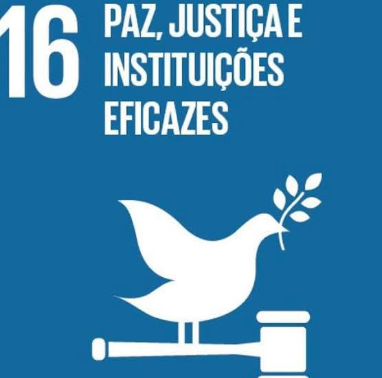

Promover sociedades pacíficas e inclusivas para o desenvolvimento.
:A ODS 16 (Objetivo de Desenvolvimento Sustentável 16) busca promover sociedades pacíficas e inclusivas, garantir o acesso à justiça para todos e construir instituições eficazes, responsáveis e transparentes.
.Seus principais desafios envolvem a violência generalizada, os conflitos armados, a corrupção e a falta de acesso à justiça. Milhões de pessoas em todo o mundo vivem sob regimes autoritários, com direitos humanos violados e pouca participação na vida pública. Além disso, a ausência de transparência em muitas instituições dificulta o combate à desigualdade e à impunidade.